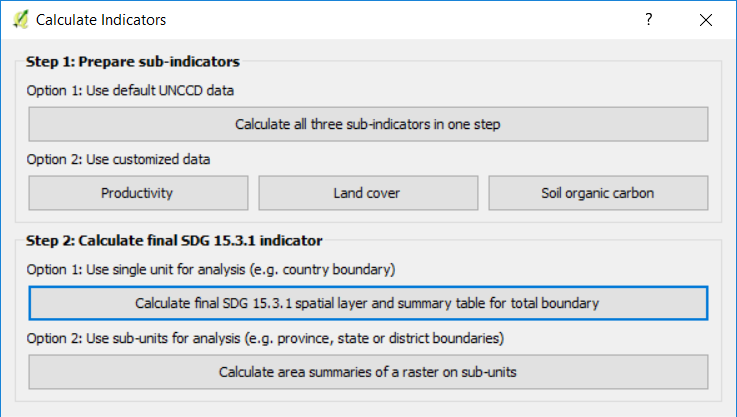
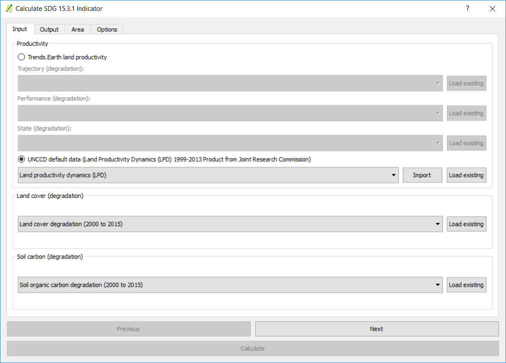
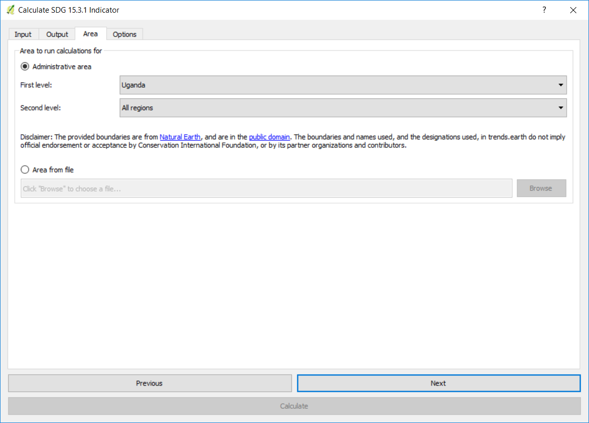

Calculer l’indicateur SDG¶
Objectif: Apprendre à intégrer les sous-indicateurs de la couverture terrestre, de la productivité primaire et du carbone organique du sol pour calculer l’ODD 15.3.1 en format matriciel et les résultats tabulaires avec les zones estimées.
Temps estimé d’achèvement: 20 minutes
Accès Internet: Non requis
Note
Vous devrez avoir préalablement calculé les indicateurs de la couverture terrestre, du carbone organique du sol et de la productivité des terres avant de lancer cet outil. Si ce n’est pas le cas, veuillez vous référer aux tutoriels spécifiques suivants pour les calculer: Exécuter des sous-indicateurs en une étape, Utiliser des données de couverture terrestre personnalisées, Utiliser des données de productivité personnalisées, et Utiliser des données de sol personnalisées.
Recherchez la barre d’outils Trends.Earth dans QGIS, puis cliquez sur l’icône Calculer (
 ).
).

Le menu ** Calculer indicateurs ** s'ouvre. Dans cette fenêtre, cliquez sur Indicateur de dégradation des terres (indicateur SDG 15.3.1).

Sélectionnez ** Calculez la couche spatiale finale de l'ODD 15.3.1 et le tableau récapitulatif pour le bouton de limite totale ** disponibles à l'étape 2 - Option 1.
Dans l’onglet Entrée, vous sélectionnez chacune des couches d’entrée nécessaires au calcul du SDG final 15.3.1. Vous avez la possibilité d’utiliser Trends.Earth land productivity ou UNCCD default data. Dans ce cas, sélectionnez les données par défaut UNCCD.
Note
Reportez-vous à la section Indicateur ODD 15.3.1 de ce manuel pour en savoir plus sur les indicateurs de productivité Trends.Earth développés à la suite du Guide de bonnes pratiques de la CCD (UNGD).
Si vous avez chargé les sous-indicateurs dans la carte QGIS, l’outil les reconnaîtra et apparaîtra pré-rempli dans chaque section correspondante.
Note
Si vous avez chargé plus d’une couche dans la carte par sous-indicateur (par exemple, modification de la couverture terrestre calculée par défaut et avec des données personnalisées), assurez-vous que celle qui est utilisée pour calculer le SDG final est celle que vous voulez .
Si les sous-indicateurs ne sont pas chargés dans votre carte QGIS, cliquez sur Charger en regard de chacune des sections des sous-indicateurs, et naviguez vers le dossier où vous les avez stockés sur votre ordinateur.
Une fois les entrées sélectionnées, cliquez sur Suivant.
Dans l’onglet Output, vous devrez définir le nom et l’emplacement de l’indicateur final SDG 15.3.1 et du tableau récapitulatif. Cliquez sur Parcourir en regard de chacun d’eux pour sélectionner l’emplacement de sortie et définir des noms.
Lorsque vous avez terminé, cliquez sur Suivant.
Dans l’onglet Zone, définissez la zone d’analyse. Il y a deux options:
Utiliser les limites de pays et d’état fournies: Si vous souhaitez utiliser cette option, assurez-vous que l’option Zone administrative est sélectionnée, puis sélectionnez Premier niveau (pays) ou Deuxième niveau (état ou province selon le pays).
Note
Les Natural Earth Administrative Boundaries fournies dans Trends.Earth sont dans le public domain. Les limites et les noms utilisés, ainsi que les désignations utilisées, dans Trends.Earth n’impliquent pas l’approbation officielle ou l’acceptation par Conservation International Foundation, ou par ses organisations partenaires et contributeurs.
Si vous utilisez Trends.Earth à des fins officielles, il est recommandé de choisir une frontière officielle fournie par le bureau désigné de votre pays.

Utilisez votre propre fichier de zone: Si vous souhaitez utiliser votre propre zone d’analyse, assurez-vous que l’option Area from file est en surbrillance. Cliquez ensuite sur Parcourir et naviguez jusqu’au dossier de votre ordinateur où vous avez stocké le fichier.
Lorsque vous avez sélectionné la zone pour laquelle vous souhaitez calculer les indicateurs, cliquez sur Suivant.
Dans l’onglet Options, vous pouvez définir le nom de la tâche et créer Notes pour identifier l’analyse que vous exécutez. Quelle information à indiquer est facultative, mais nous suggérons de noter:
Domaine d’analyse
Rendez-vous
Les indicateurs fonctionnent

Lorsque vous avez terminé, cliquez sur Calculer. Une barre bleue claire s’affiche temporairement, indiquant que la tâche a été envoyée avec succès.
Note
Cette analyse sera exécutée sur votre ordinateur local, de sorte que le temps de traitement dépendra de la taille de la zone, de la résolution des données et des capacités de traitement de votre ordinateur. Ne fermez pas votre ordinateur et ne le mettez pas en veille pendant l’exécution, car l’analyse échouera.
Lorsque l’analyse est terminée, un message Success vous avertira et l’indicateur sera chargé sur la carte.

Note
Reportez-vous à la section Interpréter le tableau récapitulatif de ce manuel pour apprendre comment ouvrir et interpréter les informations dans le tableau récapitulatif créé par cette analyse.